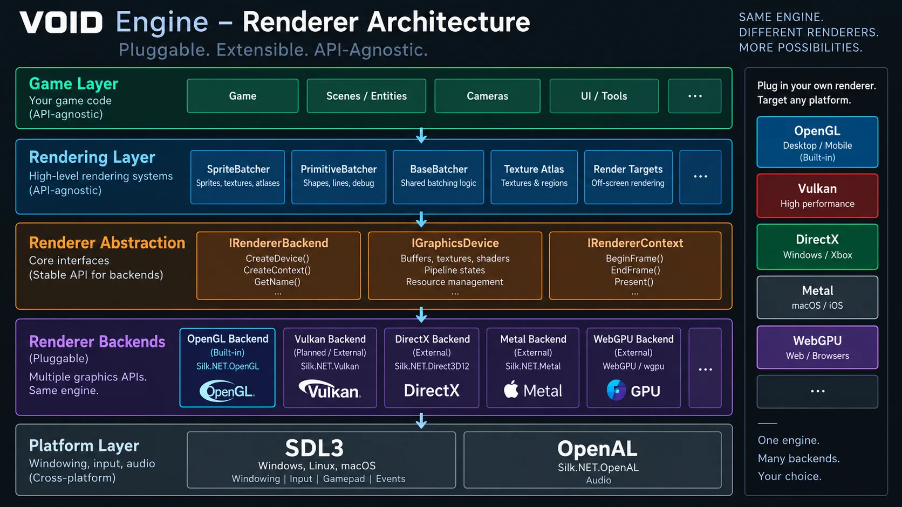

IRendererBackend
Backend-level renderer integration and lifecycle.
Rendering
The built-in backend uses Silk.NET.OpenGL. VOID's higher-level rendering systems are designed around public renderer-neutral contracts so another backend can replace it without redefining the rest of the framework.
VOID 2.x uses SDL3 for the platform layer, Silk.NET.OpenGL for the built-in renderer, and Silk.NET.OpenAL for audio. The OpenGL implementation is the default renderer, not the definition of the renderer API.
Backend authors can implement the public graphics contracts for APIs such as Vulkan, Direct3D, Metal, WebGPU, OpenGL, or another renderer.
Sprite batching, primitives, textures, render targets, cameras, shaders, and other game-facing systems should not need to become API-specific just because the backend changes.

Public contracts
IRendererBackendBackend-level renderer integration and lifecycle.
IGraphicsDeviceRenderer-specific GPU behavior behind a public device contract.
IRendererContextRenderer context data, including native platform handles when a backend requires them.
A project can begin with the built-in OpenGL backend and still have an architectural path to another graphics API later. That can matter for different platforms, specialized rendering requirements, or future web-oriented backends.
Use the default first